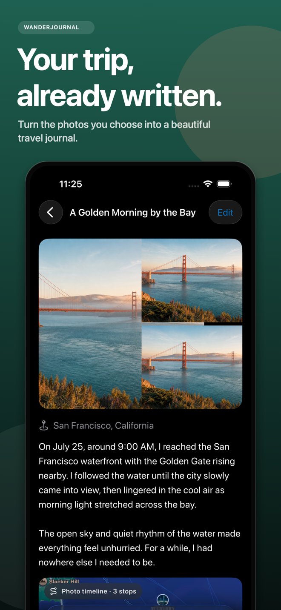
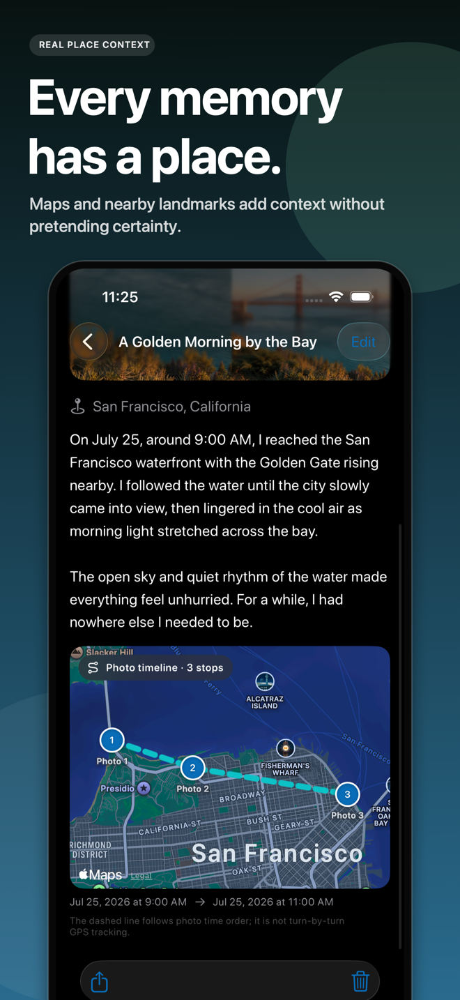
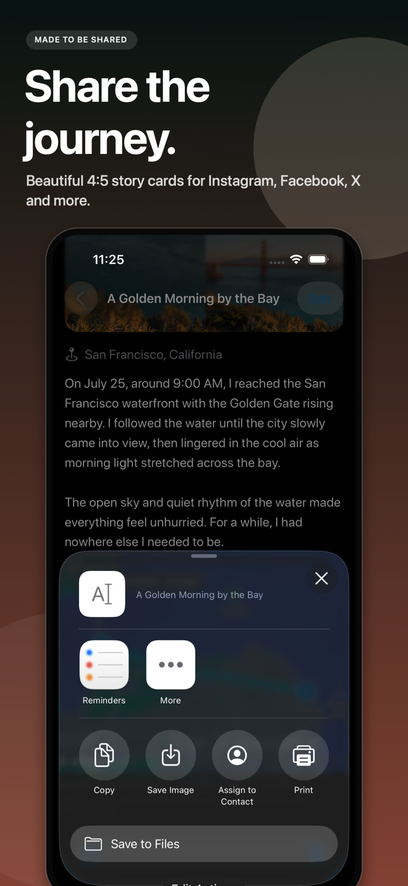
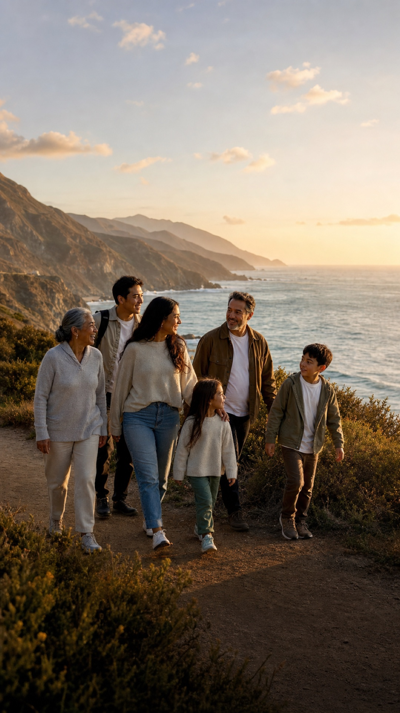
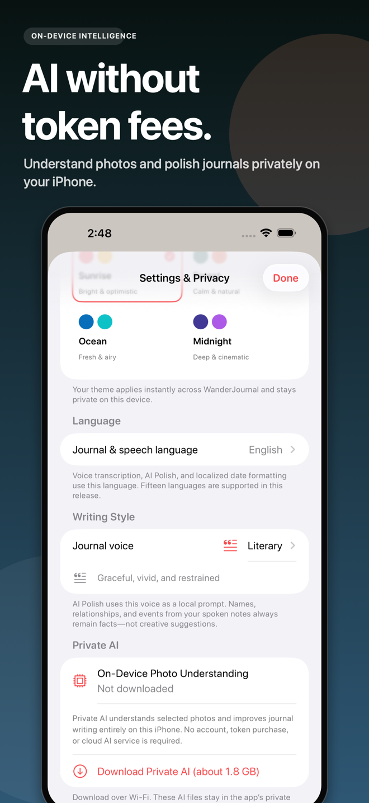

Choose one trip
Select up to 12 photos. Add a thought or voice note if you want—but you never have to begin from an empty page.
Private beta for iPhone
Choose the photos from a trip. WanderJournal connects their moments, dates, and places, then writes a beautiful private story you can keep and share.

12 photos. 3 places. One story worth keeping.
Your photos never go to a cloud AI.FROM CAMERA ROLL TO KEEPSAKE
Start with the trip that is still sitting in your photo library. WanderJournal does the first pass, while you keep the final word.
Select up to 12 photos. Add a thought or voice note if you want—but you never have to begin from an empty page.
Dates and trusted photo locations become a route. On-device intelligence understands the selected moments and finds their thread.
Get an editable first draft with its photos and map. Refine it, save it, or turn it into a beautiful share card.
WHY WANDERJOURNAL
Travel journaling should feel like reliving the trip—not completing an assignment.
The people, food, scenery, and little details in your selected photos give the story somewhere real to begin.
Photo timestamps and GPS connect where you went with when it happened—without tracking you during the trip.
Every title and paragraph stays editable. The app creates a first draft; you decide what deserves to remain.
A REAL RESULT, NOT A FEATURE LIST
WanderJournal turns the moments in your selected photos into an editable narrative in your chosen style and language.
See the route through photo-backed locations and nearby context, arranged in the order your journey unfolded.

Your iPhone creates the finished image locally. There is no hosted copy of your private story and no public journal page.

START WITH THE TRIP YOU ALREADY TOOK

PRIVATE BY DESIGN
Photo understanding and journal writing run on your iPhone. WanderJournal does not send your memories to a cloud AI provider.

TRY THE MAGIC BEFORE YOU PAY
Create it, edit it, and keep it. If WanderJournal earns a place on your phone, unlock unlimited journeys with one purchase.
BEFORE YOU BEGIN
Yes. Choose up to 12 photos and optionally add a note or voice memory. The app creates an editable first draft using the content, dates, and trusted locations in those photos.
No. Photo understanding and journal writing run on your device. WanderJournal does not send your selected photos or journal text to a cloud AI provider.
No. The route is built from GPS metadata already embedded in the photos you select. If a photo has no trusted location, WanderJournal does not invent one.
WanderJournal creates a share card image locally and hands it to the iOS share sheet. It does not upload your journal to create a public webpage.
No. Your first complete journey is free. Unlimited journeys are available through a one-time lifetime unlock.
WanderJournal is preparing for private iPhone beta testing. Request an invite and include your iPhone model so we can match you with the right build.
YOUR FIRST JOURNEY IS WAITING
Start with that one. We’ll help you turn it into something worth returning to.
Get the private beta First journey free · iPhone · No subscription